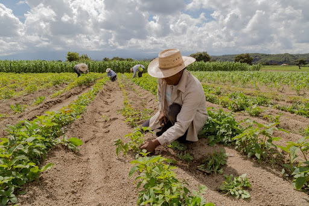

A agricultura familiar representa quase 80% das propriedades agrícolas do Brasil e 67% do total de trabalhadores ocupados na agropecuária
A agricultura familiar é um modelo de produção agrícola baseado na gestão da propriedade por uma família, que utiliza predominantemente o trabalho da própria família e tem a pequena propriedade como principal fonte de renda. Sua importância é significativa, pois a agricultura familiar desempenha um papel fundamental na segurança alimentar, na preservação ambiental, no desenvolvimento econômico local e na manutenção da cultura e tradições rurais.
Além disso, contribui para a redução do êxodo rural, promove a diversificação da produção agrícola e valoriza a produção de alimentos saudáveis e sustentáveis. No contexto global, a agricultura familiar desempenha um papel crucial na produção de alimentos e no combate à fome, sendo essencial para a garantia da soberania alimentar das nações.
Para ser caracterizada como agricultura familiar, a produção deve utilizar mão de obra de sua própria família nas atividades econômicas e a propriedade não pode ser maior que quatro módulos fiscais. A direção do empreendimento agropecuário deve ser realizada por membros da família. Além disso, uma parte mínima da renda familiar precisa ser gerada pela propriedade rural.
A agricultura familiar foi reconhecida como profissão no Brasil a partir da aprovação da lei nº 11.326/2006. A legislação definiu esses limites da exploração da atividade rural realizada em pequenas propriedades para permitir o acesso a programas governamentais de incentivo a essa prática agrícola — como linhas de crédito, assistência técnica e programa de aquisição de alimentos
A produção em família na agricultura é baseada no trabalho conjunto dos membros da família, que se dedicam às atividades agrícolas em uma propriedade rural.
Cada membro da família pode ter funções específicas de acordo com suas habilidades e capacidades, contribuindo para diferentes etapas do processo produtivo, como o plantio, cultivo, colheita e comercialização Além disso, a produção em família geralmente envolve o uso de técnicas tradicionais e modernas de manejo da terra, visando à sustentabilidade e à diversificação da produção. A renda gerada pela comercialização dos produtos muitas vezes é fundamental para a subsistência e o desenvolvimento da própria família, contribuindo para a economia local e regional. dos produtos.
Além disso, a produção em família geralmente envolve o uso de técnicas tradicionais e modernas de manejo da terra, visando à sustentabilidade e à diversificação da produção. A renda gerada pela comercialização dos produtos muitas vezes é fundamental para a subsistência e o desenvolvimento da própria família, contribuindo para a economia local e regional.